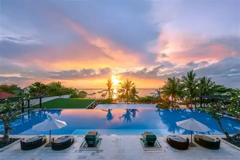

Hành trình đánh thức giấc mơ của Resort Luxury
1995's,
Bắt đầu từ thập kỷ trước, nơi đây không chỉ là một khu nghỉ dưỡng mà còn là một tác phẩm nghệ thuật tôn vinh vẻ đẹp thiên nhiên và di sản văn hóa. Mỗi góc nhỏ, mỗi phiến đá đều được sắp đặt tỉ mỉ, lưu giữ linh hồn của thời gian và tình yêu dành cho sự hoàn mỹ.
Những túp lều tranh lợp mái lá truyền thống lần lượt mọc lên dưới bóng rợp của rừng dừa nhiệt đới, giữ trọn vẻ mộc mạc và tinh tế của văn hóa bản địa.
Mỗi món đồ nội thất gỗ, mỗi bức phù điêu chạm khắc đều kể lại một câu chuyện lịch sử. Một di sản nghệ thuật được lưu truyền qua nhiều thế hệ gia đình.
Và cho đến ngày nay, khi bước qua cánh cổng tĩnh lặng, bạn sẽ cảm nhận được thời gian như ngừng trôi. Một nơi trú ẩn vượt khỏi nhịp sống hối hả thường nhật.
Tandjung Sari chưa từng có ý định trở thành khách sạn boutique tiêu biểu của châu Á nhiệt đới.
Nơi đây bắt đầu như một chốn nghỉ đêm của người chủ sở hữu, Wija Wawo-Runtu (1926 - 2001), và gia đình ông khi họ ghé thăm Bali từ Jakarta trong những chuyến đi mua sắm đồ cổ.
Thiên đường nhỏ của gia đình Wawo-Runtu thu hút bạn bè từ Jakarta, và đến năm 1962, họ đã có bốn bungalow nhỏ dành cho những người bạn muốn ghé thăm Bali.
Ngành công nghiệp du lịch của Bali bắt đầu hưng thịnh, dẫn đến việc mở rộng sân bay quốc tế của hòn đảo, chính thức khánh thành dưới tên Sân bay Quốc tế Bali Ngurah Rai vào tháng 8 năm 1969.
Khi du lịch tiếp tục phát triển, Sanur trở thành địa điểm danh giá bậc nhất trên đảo.
Wija thấu hiểu rằng
những vị
khách luôn
khao khát một sự
gắn kết thân mật
với Bali.
Không chỉ dừng lại ở sự thoải mái, Resort Luxury mang đến một hành trình khám phá chiều sâu văn hóa nguyên bản. Từ những điệu múa truyền thống đến nghệ thuật thủ công địa phương.
Họ muốn cảm nhận làn gió của Bali vương trên da thịt, và sống trọn vẹn trong một không gian đậm chất Bali theo cách thoải mái nhất.
Các hoạt động văn hóa thường xuyên được tổ chức để giữ gìn và tôn vinh những giá trị nghệ thuật cổ truyền của vùng đất này.

Góc nhỏ bình yên
Thành công của Tandjung Sari đã thuyết phục ông rằng khái niệm này có thể được nhân rộng lên một quy mô lớn hơn.
Điều đó đã khơi nguồn cảm hứng cho sự phát triển của Điền trang Batujimbar.
Vào tháng 2 năm 1974, Indonesia đăng cai tổ chức hội nghị Hiệp hội Du lịch Châu Á Thái Bình Dương (PATA), và vài tháng trước đó, vào tháng 10 năm 1973, Bali Hyatt đã được hoàn thành.
Sánh ngang với một Tandjung Sari được mở rộng, với 16 bungalow mới luôn kín chỗ, nhà hàng cũng trở thành một điểm nhấn đầy sức hút. Ẩm thực trứ danh của Tandjung Sari đã làm say đắm Craig Claiborne, một nhà văn ẩm thực và cựu biên tập viên của The New York Times, người đã dành trọn một chương để viết về công thức món Soto Ayam của Tatie Wawo-Runtu.
Khi các công trình kiến trúc vẫn còn mới mẻ và khách sạn đang hoạt động rất tốt, đã có vô số những vị khách nổi tiếng ghé thăm: Calvin Klein, Kirk Douglas, David Bowie, Mick Jagger, Nữ hoàng Ingrid của Đan Mạch, Margaret Mead, Ingrid Bergman, Annie Lennox, Ringo Starr, Yoko Ono, Paul Getty Jr. cùng vợ...
Trong nhiều năm, khách sạn đã phải oằn mình chống chịu qua những biến động kể từ thời kỳ hoàng kim của thập niên 1970 và 80, bàng hoàng trước tác động của Chiến tranh Vùng Vịnh 1991, cuộc khủng hoảng tài chính 1997, sự ra đi của Wija Wawo-Runtu, và đại dịch SARS 2003.
Rồi sự tái sinh dịu dàng cũng đến. Năm 2005, Tandjung Sari trải qua lần tu sửa đầu tiên.
Vào năm 2012 khi bước sang tuổi ngũ tuần, khách sạn đã thực sự được hồi sinh mạnh mẽ từ sâu bên trong. Để kỷ niệm cột mốc vàng son của Tandjung Sari, cuốn sách tuyệt tác mang tên Tandjung Sari—A Magical Door to Bali đã chính thức được ra mắt.
Cuốn sách kể lại quá trình khách sạn trưởng thành, những thăng trầm và vinh quang, cùng những con người đã làm nên lịch sử của nó. Tác phẩm đã trở nên nổi tiếng khi lưu giữ những câu chuyện du lịch thuở sơ khai những năm 60 ở Sanur và khơi gợi độc giả khám phá sâu hơn về kiến trúc Bali.
Một bước tiến khác trong cột mốc 55 năm (2017) đã được kỷ niệm bằng bộ phim tài liệu về Tandjung Sari, khắc họa lại trọn vẹn hành trình từ những ngày đầu tiên.
Khám phá không gian
Tận hưởng từng khoảnh khắc bình yên